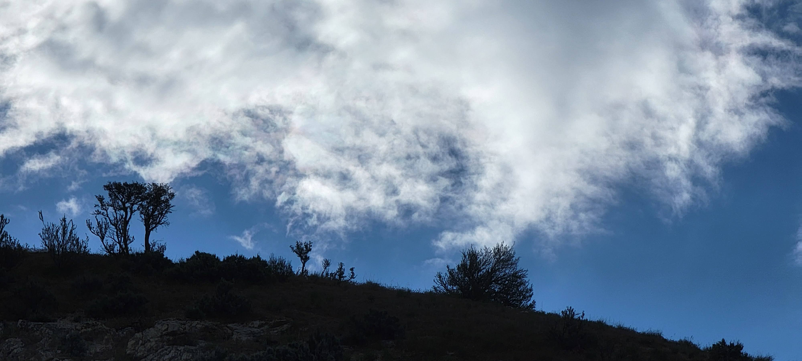

Tried to connect remains and envision the stairs connecting floors, before it was torn apart.
What was once a 3 story temple, now resembled a double humped camel lying down.
The lowest, biggest round spire sat between that 2 remaining part of the temple.
A man approached and said, he was at the dedication of the temple.
That was over 50 years ago.1
Remarked,
you must have been a toddler
“No, I attended as a Bishop, I am 82 years old”
He looked 15 to 20 years younger than his age.
Unlike me, lamenting the loss and second guessing the decision to demolish and rebuild the structure, he was optimistic and look forward to the new temple
He served a Western Mexico Mission with our neighbor, F. Gomez. He lived in El Monte, Los Angeles.
Close to the area of my mission.
When he was a Bishop there was only one Spanish speaking Ward. Now, 50 years later, there are over 40 congregations in the Utah County.
He also recounted his time at the BYU International Studies. Moreover, in 1990 he was called to serve on the Young Men General Board2

Antique vs Vintage
Generative AI states,
An antique is an item that is at least 100 years old, while a vintage item is typically between 20 and 100 years old. The term “true vintage” refers to items that are at least 50 years old.
Although the term antique and vintage are used to describe items such as housewares and accessories, the term antique and true vintage can serve as a marker or a classifier to indicate an age of man-made items.
Including edifices.
According to above definitions following temples are antiques.3
[Year dedicated, (Years since Dedication), As of 2024]
- 1877 (147) - St. George Utah
- 1884 (140) - Logan Utah
- 1888 (136) - Manti Utah
- 1893 (131) - Salt Lake Temple
- 1919 (105) - Laie Hawaii
- 1923 (101) - Cardston Alberta
Following would be considered true vintage
- 1927 (97) - Mesa Arizona
- 1945 (79) - Idaho Falls Idaho
- 1955 (69) - Bern Switzerland
- 1956 (68) - Los Angeles California
- 1958 (66) - Hamilton New Zealand
- 1958 (66) - London England
- 1964 (60) - Oakland California
- 1972 (52) - Ogden Utah
- 1972 (52) - Provo Utah
- 1974 (50) - Washington DC
Of the true vintage temples, or any other temples built in the modern era, only Ogden and Provo have been demolished and rebuilt.4
Although it can be further speculated, it appears that the remaining true vintage temples will be updated rather than rebuilt from the ground up.
To Rebuild and Start-over
The original Provo Utah took 2 years and 5 months to complete.5
- Ground Breaking, 15 September 1969
- Dedicated, 9 February 1972
It is estimated to take 4 years for the new temple to be built.6
The demolition began in earnest on the 18 April 2024 with the removal of the Angel Moroni.
By the time, Hermano Flores and I met on 17 May 2024, the former edifice, Provo Utah Temple, was no longer.
The demolition phase was complete and the work was transitioning to clearing the debris phase.
This spring, especially during May, the weather seemed cooler and wetter. On an emotional level, perhaps heavens were weeping a bit for this structure as well. Pragmatically, the moisture was sent to minimize the dust and other particles that were being generated during the razing.
Grateful that H. Flores and I met, so that we can visit and learn how the Lord has guided him. Also that I can learn from his views and his enthusiasm for the change and improvement to temples around us.
Thank you H. Flores and others who have served within the Temple, locally and at times far removed from home.
Thank you, Provo Temple for the serving the community of Provo and the Utah Valley for the past 52 years.
As a connection between the temporal and eternal realm. As a reminder of things spiritual in a physical world.
For the presence, reminder, by blending with the environment. Not in an overwhelming, or apart from the surrounding, way.
Grateful for the memories both religious and secular, because there was a true vintage temple and people nearby.
# Appendix
Reckoning of Years and Structures in Europe
Years seem to be replaced by decades and even centuries.
Chat GPT lists these notable structures.
Europe is renowned for its historic architecture, with buildings that span various eras and architectural styles. Here is an overview of antique and vintage buildings across Europe, categorized by the centuries they were constructed in:
Pre-10th Century
- Colosseum (Rome, Italy): Completed in AD 80, this iconic Roman amphitheater is a marvel of ancient engineering.
- Hagia Sophia (Istanbul, Turkey): Originally built as a cathedral in AD 537, it was a mosque and is now a museum, showcasing Byzantine architecture.
10th-12th Century
- Durham Cathedral (Durham, England): Begun in 1093, this Romanesque cathedral is a masterpiece of Norman architecture.
- Mont Saint-Michel (Normandy, France): Construction started in the 10th century, and this island abbey features stunning medieval architecture.
13th-14th Century
- Notre-Dame Cathedral (Paris, France): Completed in 1345, it is one of the finest examples of French Gothic architecture.
- Palazzo Vecchio (Florence, Italy): Built in 1299, this medieval town hall is a symbol of Florence’s rich history.
15th-16th Century
- St. Peter’s Basilica (Vatican City): The construction of this Renaissance masterpiece began in 1506.
- Alhambra (Granada, Spain): Although originally built in the mid-13th century, significant expansions and renovations occurred throughout the 14th century.
17th Century
- Versailles Palace (Versailles, France): Originally a hunting lodge, it was expanded into a grand palace by Louis XIV starting in 1661.
- St. Paul’s Cathedral (London, England): Completed in 1710, it is an iconic example of English Baroque architecture.
18th Century
- Winter Palace (Saint Petersburg, Russia): Constructed between 1730 and 1837, it showcases Russian Baroque architecture.
- Royal Palace of Madrid (Madrid, Spain): Built in the mid-18th century, it is the largest royal palace in Europe by floor area.
19th Century
- Eiffel Tower (Paris, France): Completed in 1889, this iron lattice tower is an emblem of French engineering.
- Neuschwanstein Castle (Bavaria, Germany): Completed in 1886, this fairy-tale castle is a prime example of Romantic architecture.
Early 20th Century
- Sagrada Familia (Barcelona, Spain): Begun in 1882 and still under construction, Antoni Gaudí’s masterpiece is a unique blend of Gothic and Art Nouveau styles.
- Villa Savoye (Poissy, France): Completed in 1931, Le Corbusier’s modernist villa is a landmark of 20th-century architecture.
Mid-20th Century
- UNESCO Headquarters (Paris, France): Completed in 1958, it showcases mid-century modern architecture.
- Berlin Philharmonie (Berlin, Germany): Completed in 1963, it is renowned for its innovative design by Hans Scharoun.
These buildings not only highlight the architectural advancements of their respective periods but also reflect the cultural, political, and technological changes that shaped Europe over the centuries. From ancient Roman structures to modernist masterpieces, each building tells a unique story about Europe’s rich and diverse history.
Reckoning of Years and Structures in Asia
Asia, with its diverse cultures and long history, boasts numerous antique and vintage buildings that span various architectural styles and periods. Here’s a comprehensive look at some of the most notable historic buildings in Asia, categorized by the centuries they were constructed in:
Pre-10th Century
- Great Wall of China (China): Construction began as early as the 7th century BC, with significant portions built during the Ming Dynasty (1368–1644).
- Borobudur (Central Java, Indonesia): Completed in the 9th century, this Buddhist temple is one of the largest in the world.
- Hōryū-ji (Nara, Japan): Founded in 607 AD, it is one of the oldest wooden buildings in the world.
10th-12th Century
- Angkor Wat (Siem Reap, Cambodia): Constructed in the early 12th century, this temple complex is the largest religious monument in the world.
- Kinkaku-ji (Kyoto, Japan): Also known as the Golden Pavilion, it was originally built in 1397, though the current structure dates from 1955 after a fire.
13th-14th Century
- Old City of Jerusalem (Jerusalem): Various structures, including the Dome of the Rock, which was completed in 691 AD but underwent significant renovations during this period.
- Sukhothai Historical Park (Sukhothai, Thailand): Contains ruins of palaces, temples, and monuments dating from the 13th and 14th centuries.
15th-16th Century
- Forbidden City (Beijing, China): Construction began in 1406 and was completed in 1420. It served as the Chinese imperial palace until the early 20th century.
- Humayun’s Tomb (Delhi, India): Completed in 1572, it is an excellent example of Mughal architecture and a precursor to the Taj Mahal.
17th Century
- Taj Mahal (Agra, India): Completed in 1653, this white marble mausoleum is a UNESCO World Heritage Site and one of the most famous buildings in the world.
- Himeji Castle (Himeji, Japan): The current structure was completed in 1609 and is a prime example of Japanese castle architecture.
18th Century
- Summer Palace (Beijing, China): Initially built in the 18th century, it served as an imperial garden and retreat.
- Amber Fort (Jaipur, India): Although its construction began in 1592, significant expansions and renovations occurred in the 18th century.
19th Century
- Gyeongbokgung Palace (Seoul, South Korea): Originally constructed in 1395, it was significantly expanded and reconstructed in the 19th century after being destroyed by fire.
- Royal Pavilion (Hua Hin, Thailand): Built in the late 19th century, it served as a royal residence and showcases a blend of traditional Thai and Western architectural styles.
Early 20th Century
- Victoria Memorial (Kolkata, India): Completed in 1921, this white marble building is a memorial to Queen Victoria and features a blend of British and Mughal architectural elements.
- Sun Yat-sen Mausoleum (Nanjing, China): Completed in 1929, it commemorates Sun Yat-sen, the founding father of the Republic of China, and features traditional Chinese architecture.
Mid-20th Century
- Lotus Temple (Delhi, India): Completed in 1986, this Bahá’í House of Worship is notable for its flower-like shape and modern architectural style.
- Tokyo Tower (Tokyo, Japan): Completed in 1958, this communications and observation tower is inspired by the Eiffel Tower and represents Japan’s post-war rebirth.
These buildings not only reflect the architectural styles and advancements of their respective periods but also offer insights into the cultural and historical contexts in which they were built. From ancient temples and palaces to modern structures, each building tells a unique story about Asia’s rich and diverse history.
Footnotes
9 February 1972, https://www.thechurchnews.com/almanac/temples/provo-utah/↩︎
https://www.thechurchnews.com/1990/4/28/23261841/new-board-members-enoc-q-flores/↩︎
https://churchofjesuschristtemples.org/temples/chronology/↩︎
Nauvoo Temple was abandoned, was in disrepair then destroyed in a storm, https://history.churchofjesuschrist.org/content/museum/museum-treasures-nauvoo-temple-in-ruins-lithograph?lang=eng↩︎
https://www.thechurchnews.com/2022/2/9/23218910/provo-utah-temple-history-future-renovation-redesign-50th-anniversary/↩︎
source to be confirmed↩︎